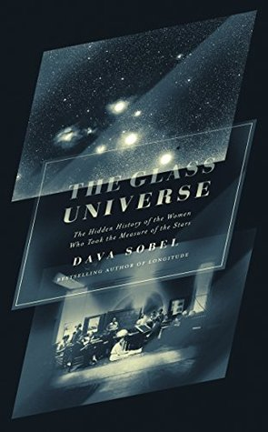

The Glass Universe: The Hidden History of the Women Who Took the Measure of the Stars
Reseña por Jorge I. Zuluaga

Ver reseña en GoodReads (necesita cuenta)
Puede que muchas personas no lo encuentren muy emocionante, pero no creo que ese haya sido tampoco el objetivo de su autora, la periodista y divulgadora científica Dava Sobel. Después de leerlo completo, debo reconocer que, para sacarle el "jugo", hay que saber previamente un poco de astronomía y astrofísica, además de algo sobre su historia. Si se cumplen esas condiciones, no dudo que experimentarán algo parecido a lo que describo a continuación.
Venía procrastinando desde hace unos años con este libro —como lo hago con casi todos— hasta que finalmente se presentó la oportunidad perfecta para leerlo. En el momento en el que escribo esta reseña, estoy dictando un curso divulgativo de astrofísica estelar y quiero presentar una perspectiva histórica realista de cómo llegamos a saber lo que sabemos hoy sobre las estrellas. Es claro que este no es el único libro que debo leer, pero después de terminarlo he obtenido una visión panorámica de la historia de la disciplina que me permitirá navegar mejor por otros textos.
"The Glass Universe" es una historia fascinante y profundamente humana sobre el nacimiento de la astrofísica observacional a finales del siglo XIX y principios del siglo XX. El libro está enfocado en algunas de las personas que lo hicieron posible (especialmente en Estados Unidos e Inglaterra) y, muy particularmente, en un grupo de extraordinarias astrónomas que, con tesón e ingenio, sentaron las bases del área trabajando, casi toda una vida, con salarios y posiciones muy por debajo de las de sus colegas masculinos.
Quienes conocen un poco del tema sabrán que nos referimos, naturalmente, al equipo de astrónomas del Observatorio de la Universidad de Harvard de principios del siglo XX, conocido en algún momento con el sexista y muy poco honroso apelativo del "Harén de Pickering".
Insisto en que cualquiera que conozca un poco de astronomía y su historia habrá oído hablar de ellas. Si no lo ha hecho de esta manera, tal vez los nombres de Henrietta Leavitt, Annie Jump Cannon o Williamina Fleming les refresquen un poco la memoria.
¿Qué dice la leyenda sobre el "harén de Pickering"? Es una leyenda propagada por la mayoría de los textos y que yo mismo, y muchas personas, seguimos repitiendo como loros en nuestras charlas y cursos.
Afirma que este ecléctico grupo de mujeres consistía, en un principio, en personas sin trabajo y, en su mayoría, sin educación que vivieron en una época en la que el destino de casi cualquier mujer era casarse y tener hijos, pero que vieron en la astronomía una oportunidad para desempeñarse en un área de la ciencia que tenía blindado el acceso a las mujeres. Todas ellas, sigue diciendo la leyenda, tenían habilidades extraordinarias pero muy "subutilizadas", como las tareas del hogar, coser o cocinar. Un destacado astrónomo, sigue la fábula, Edward Pickering, aprovechando las habilidades subutilizadas de esas mujeres —especialmente su paciencia, cuidado con los detalles e ingenio— y valiéndose además del hecho de que no le costaría mucho contratarlas (tan solo tendría que pagarles 25 centavos de dólar la hora, aproximadamente el 25 % de lo que le pagaría a un empleado calificado), utilizó su trabajo para examinar pacientemente miles de placas fotográficas con imágenes del cielo que él y sus colegas habían tomado. Los datos pacientemente extraídos de esas placas por las "mujeres de Pickering" —recuerden que estoy repitiendo la leyenda— se convirtieron a la larga en información astronómica y astrofísica muy relevante que, por un lado, mejoró nuestra comprensión del universo, pero por el otro, permitió fortalecer la carrera de Pickering y de otros hombres en la astronomía a costa del trabajo mal pago de las mujeres. Finalmente, la leyenda afirma que algunas de esas mujeres, una vez superadas las pruebas más tediosas de su trabajo, hicieron descubrimientos originales y, a la larga, con dificultad pero con paciencia, algunas se convirtieron en reconocidas astrónomas.
Y colorín colorado, este cuento mal se ha contado.
Bueno, aunque hay que decir que algunos detalles sí son ciertos.
La primera sorpresa que me llevé al leer el ilustrativo y emocionante relato de Dava Sobel es que las mujeres que trabajaron en el observatorio de la Universidad de Harvard, en el período comprendido aproximadamente entre 1880 y 1940, no eran para nada mujeres sin educación o sin conocimientos científicos; no eran mujeres esclavizadas en sus hogares haciendo astronomía para conseguir unos centavos (tal vez exagero con lo de la leyenda, pero juraría que lo he leído en algunas partes).
Si bien la autora no describe la vida de todas ellas, en realidad las mujeres más destacadas de ese grupo eran egresadas de prestigiosos *colleges* femeninos y otras instituciones educativas en Estados Unidos y en el exterior; las menos, también eran jóvenes con educación, algunas de las cuales venían de familias con alguna tradición intelectual o, al menos, en las que se valoraba la formación académica de sus hijas.
Es cierto que muchas no habían tenido un trabajo en la academia. En esto la leyenda no se equivoca: hoy como ayer, obtener una posición en una universidad, un instituto de investigación o un observatorio es más difícil para las mujeres. En la historia, una de ellas —a decir verdad, la más destacada del grupo—, Williamina Fleming, había trabajado como criada; ¡pero atención!, no por no tener educación, sino por ser una mujer inmigrante (era de origen irlandés) y tener hijos —y un esposo, que es más o menos lo mismo— a los cuales cuidar.
Lamentablemente, hoy todavía muchas mujeres inmigrantes y con educación se ven obligadas a realizar tareas como estas por falta de oportunidades. Algunas, como Williamina Fleming, logran superar su situación y convertirse en exitosas y reconocidas científicas. La mayoría, lamentablemente, nunca lo consigue.
La segunda sorpresa que me llevé es que Edward Pickering, director del Observatorio de Harvard durante los años en los que se juntó este increíble grupo humano, no era un hombre despótico y machista que se aprovechó de la situación de las mujeres de la época para explotarlas (sí, repito, puede que esté exagerando un poco).
Al contrario, el Pickering que se revela en el relato de Sobel es el de un buen ser humano —y aun así un hombre con privilegios y sesgos como todos los hombres de su época... y del presente— que se valió de su posición de poder para dar acceso a decenas de mujeres jóvenes al trabajo práctico de "investigación" en astronomía que estaba normalmente reservado para los hombres. En palabras del presente, Edward Pickering fue un verdadero aliado que, a lo largo de los años, consiguió establecer en una institución científica prestigiosa un grupo más equitativo de profesionales.
Siempre me he preguntado por qué la astronomía es una de las ciencias físicas, en marcado contraste con la física misma, en la que el número de mujeres profesionales es casi tan grande como el de hombres. Me atrevería a decir, después de leer "The Glass Universe", que el origen de esta afortunada situación se puede rastrear hasta el trabajo de este grupo extraordinario de mujeres a principios del siglo XX en Harvard, y a Edward Pickering como indiscutido pionero.
No quiero tampoco dar la impresión de que —otra vez— un hombre lo hizo todo posible, incluso darle a las mujeres un mejor lugar en el mundo de la astronomía. No solo no quiero dar esa impresión equivocada e injusta, sino que tampoco es cierto: esta fue mi tercera sorpresa.
Muy poco de lo que se narra en esta increíble historia, que a ratos se me antojó como una entretenida novela, habría sido posible sin la visión y generosidad de una mujer: Mary Anna Palmer.
El nombre de la señora Palmer no aparece en los anales de la astronomía. Tampoco se la encuentra en los comentarios históricos de los libros de texto de astronomía y astrofísica, y juraría que muy pocas veces ha sido mencionada en un aula de clase. Aun así, a Mary Anna le debemos tanto como a Pickering la revolución de la astrofísica observacional de principios del XX que se gestó en Estados Unidos.
Como es común, el nombre de su esposo sí que es inconfundible en astronomía: Henry Draper. Cualquiera que haya estudiado astronomía conoce el afamado catálogo de Draper (HD), con el que casi medio millón de estrellas en el cielo reciben su nombre.
Draper fue un afamado observador astronómico del siglo XIX; en realidad se trataba, para mi sorpresa —ya me vengo acostumbrando—, de un astrónomo aficionado (su profesión principal era médico). El doctor Draper fue el pionero de la fotografía de espectros estelares, la base justamente de la revolución sobre la que trata este libro.
Pues bien, Henry no estaba solo. Su esposa, la señora Palmer, no solamente fue su compañera de vida, sino que también fungió por años como su colega de afición y de trabajo observacional. Sí, también con los Draper se produjo otro de los innumerables casos en los que grandes mujeres que, compartiendo el trabajo de sus compañeros o familiares —piensen en el caso de Caroline Herschel, Mary Anne Lavoisier o Mileva Maric— se vieron desplazadas a un lugar secundario por el rancio androcentrismo de la historia de la ciencia.
Pero la actividad como astrónoma aficionada de Mary Anna concluyó lamentablemente con la muerte de su esposo en 1882, mucho antes de los eventos más importantes de esta "novela". Sin embargo, el dinero de la señora Palmer —que era heredera de una incalculable fortuna— financió por casi 40 años la actividad científica del observatorio de la Universidad de Harvard, actividad que en aquel entonces recibía muy poca financiación de la universidad misma o del gobierno. Sin el interés de la señora Palmer por, primero, continuar la labor que había iniciado con su esposo de fotografiar el espectro del mayor número de estrellas posible y, segundo, por apoyar económicamente a mujeres jóvenes para que, bajo la dirección de Pickering, trabajaran analizando los datos tomados allí, la astrofísica observacional se habría demorado mucho más en despegar.
Sí, fue una mujer, astrónoma y multimillonaria —¡qué bella combinación!— la que puso el combustible para esta guachafita.
La lista de sorpresas podría continuar, pero la paciencia de ustedes como lectores o lectoras de esta reseña seguramente no da para tanto. Además, no deberían estar perdiendo el tiempo leyendo una reseña y más bien deberían ocuparlo en comenzar el libro.
Termino señalando que muchos de los descubrimientos, datos personales, accidentes, muertes, romances y eventos que siguieron a este fantástico despegar y que marcaron la historia de la astrofísica por aquel entonces son el corazón de casi todo este libro. Desde el descubrimiento de las binarias espectroscópicas (Antonia Maury), el origen de la clasificación espectral (Williamina Fleming, Annie Jump Cannon), el descubrimiento de la relación período-luminosidad de las variables pulsantes (Henrietta Leavitt ¡gracias, Dava, por hablar de la "Ley de Leavitt"!), la composición de las estrellas (Cecilia Payne), pasando por la medida de la distancia a los cúmulos globulares, el tamaño de la Vía Láctea (Harlow Shapley, que no sabía fue el sucesor de Edward Pickering y otro honorable aliado de la causa femenina en astronomía) y el descubrimiento del medio interestelar, hasta llegar a la astrofísica estelar del presente, desfilan por las páginas de "The Glass Universe".
Repito lo que dije al principio: puede que este no sea un libro del agrado de todas las personas. Pero si estudian o enseñan astrofísica, y en especial si son mujeres en la disciplina, TIENEN —así en mayúsculas— que leer "The Glass Universe".